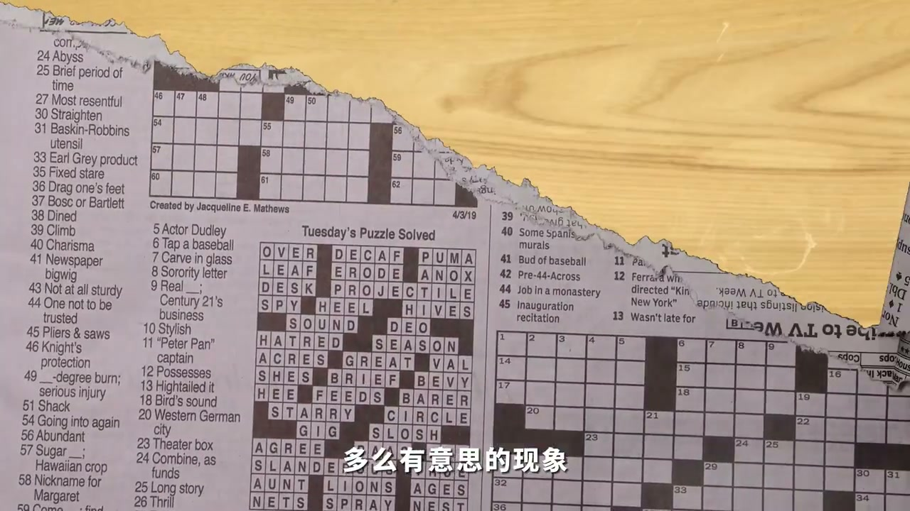

01
中文
如何定义他，取决于把他和什么画面剪到一起。
EN
How you define him depends on what you cut him next to.
表达提示depends on the cut（取决于剪辑）

Scene English · 剪辑 · 蒙太奇
Editing for Beginners: Understand Montage With One Buff Dude
🎧 语音讲解
The Kuleshov effect: this is a buff dude. …
情境同样表演剪不同画面产生不同含义。
如何定义他，取决于把他和什么画面剪到一起。
How you define him depends on what you cut him next to.
表达提示depends on the cut（取决于剪辑）
同样的表演呈现出了不同的感觉。
The same performance gives different meanings.
表达提示same performance（同样表演）
这是苏联导演库里肖夫在一百多年前发现的库里肖夫效应。
This is the Kuleshov effect, discovered over a century ago.
表达提示Kuleshov effect（库里肖夫效应）
depends on the cut（取决于剪辑
same performance（同样表演

What is montage: so montage—this French-or…
情境蒙太奇源于法语，意为构筑装配。
蒙太奇这个源于法语的词汇，到底是什么意思？
This French-origin word—what does montage mean?
表达提示French origin（源于法语）
蒙太奇是电影的精髓。
Montage is the essence of cinema.
表达提示essence of cinema（电影精髓）
将不同空间同时发生的两段画面拼接在一起，完成叙事，创造出了最早的蒙太奇。
Splicing simultaneous, different-space shots created the earliest montage.
表达提示first montage（最早蒙太奇）
French origin（源于法语
essence of cinema（电影精髓

The essence of montage: but is it that sim…
情境蒙太奇本质是脑补，导演设计+观众联想。
难道就这样简单地把蒙太奇理解为剪辑吗？
Is it that simple to equate montage with editing?
表达提示just editing?（只是剪辑？）
蒙太奇本质并不是剪辑本身，而是脑补。
Montage's essence isn't editing—it's inference.
表达提示essence is inference（本质是脑补）
只有当导演的设计和观众的脑补结合到一起，才让画面的组合成为叙事整体。
Only when design meets inference does the combination become narrative.
表达提示design plus inference（设计加脑补）
观众的联想、经验和理解占据着非常重要的位置。
The audience's imagination, experience, and understanding hold a vital place.
表达提示audience matters（观众占位）
just editing?（只是剪辑？
audience matters（观众占位
Practical uses: to truly grasp the concept…
情境交叉蒙太奇与对比蒙太奇的实战用法。
将英雄赶来营救的画面和美女遭遇危险的画面来回切换。
Alternate the hero's approach and the beauty's danger.
表达提示cross-cutting（交叉剪辑）
这种手法被称为最后几分钟营救，是一种非常经典的交叉蒙太奇手法。
The 'last-minute rescue' is a classic cross-cut technique.
表达提示last-minute rescue（最后一分钟营救）
通过把反差较大的两组镜头进行对比的对比蒙太奇，可以进一步加强我们要表达的主题。
Contrast montage strengthens your theme.
表达提示contrast montage（对比蒙太奇）
cross-cutting（交叉剪辑
contrast montage（对比蒙太奇
说库里肖夫效应
说蒙太奇词源
说最早蒙太奇
说本质是脑补
说交叉与对比蒙太奇
蒙太奇本质是脑补。
没剪辑只能顺时叙事。
省略要靠观众脑补。
观众联想成就蒙太奇。
交叉对比都是实战法。